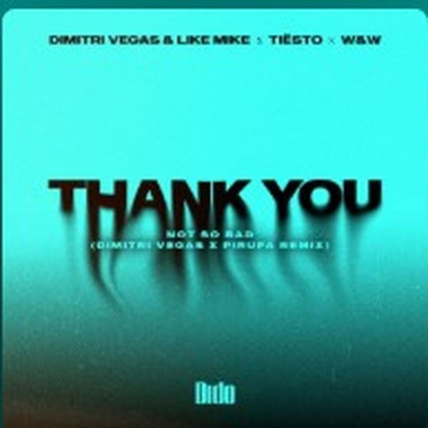
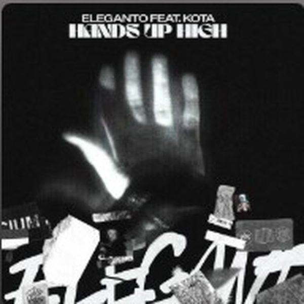
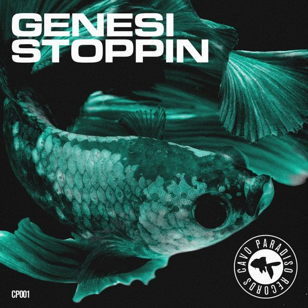

I 18 dischi
 1
ININNA TORADubdogz x Jude & Frank
1
ININNA TORADubdogz x Jude & Frank

2 Thank You (Dimitri Vegas & Pirupa Remix)Dimitri Vegas, Like Mike, W&W, Dido
3 Hands Up HighKota 4
HoneyESSED
4
HoneyESSED
 5
CandelaAllan Piziano
5
CandelaAllan Piziano
 6
Friends (ARTBAT Remix Extended)Meduza
6
Friends (ARTBAT Remix Extended)Meduza

7 StoppinGENESI (ITA) 8
GrooverKattison
8
GrooverKattison
 9
French KissSpace Motion
9
French KissSpace Motion
 10
Lose Your Mind (feat. David LeSal)James Haskell
10
Lose Your Mind (feat. David LeSal)James Haskell
 11
Power WorkoutAle Molinari
11
Power WorkoutAle Molinari
 12
Out Of ControlFirebeatz
12
Out Of ControlFirebeatz
 13
Lighter (VIP Mix)Galantis, David Guetta, 5 Seconds Of Summer
13
Lighter (VIP Mix)Galantis, David Guetta, 5 Seconds Of Summer
 14
I Wanna RaveTujamo x WakuWaku
14
I Wanna RaveTujamo x WakuWaku
 15
Rushin'Capri
15
Rushin'Capri
 16
Shadows Of The NightGIGI D'AGOSTINO, BOOSTEDKIDS
16
Shadows Of The NightGIGI D'AGOSTINO, BOOSTEDKIDS
 17
ConcentratePaul Oakenfold x Carl Cox
17
ConcentratePaul Oakenfold x Carl Cox
 18
Craving MoreConrad Taylor, Hookline
18
Craving MoreConrad Taylor, Hookline
La tracklist
- 1 ININNA TORA Dubdogz x Jude & Frank Nitron Music
- 2 Thank You (Dimitri Vegas & Pirupa Remix) Dimitri Vegas, Like Mike, W&W, Dido Ministry of Sound Recordings
- 3 Hands Up High Kota STMPD RCRDS
- 4 Honey ESSED Retail Records
- 5 Candela Allan Piziano Toolroom Records
- 6 Friends (ARTBAT Remix Extended) Meduza AETERNA Records
- 7 Stoppin GENESI (ITA) Cavo Paradiso Records
- 8 Groover Kattison Ultra Records
- 9 French Kiss Space Motion Space Motion Records
- 10 Lose Your Mind (feat. David LeSal) James Haskell Toolroom Records
- 11 Power Workout Ale Molinari Black Lizard Records
- 12 Out Of Control Firebeatz HELDEEP Records
- 13 Lighter (VIP Mix) Galantis, David Guetta, 5 Seconds Of Summer Big Beat Records
- 14 I Wanna Rave Tujamo x WakuWaku CITY STARS RECORS
- 15 Rushin' Capri Armada Music
- 16 Shadows Of The Night GIGI D'AGOSTINO, BOOSTEDKIDS Time Records
- 17 Concentrate Paul Oakenfold x Carl Cox Armada Music
- 18 Craving More Conrad Taylor, Hookline Taylor Records